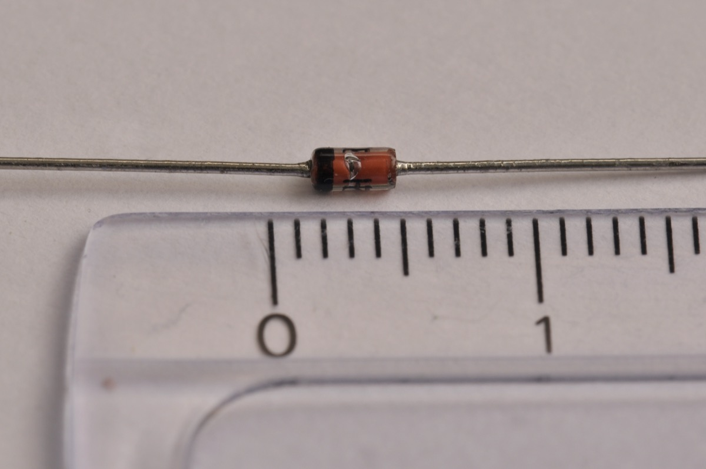
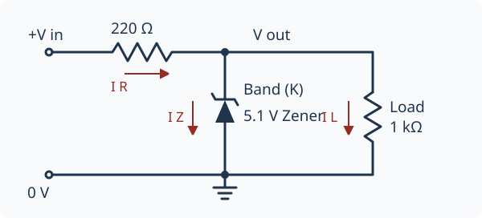
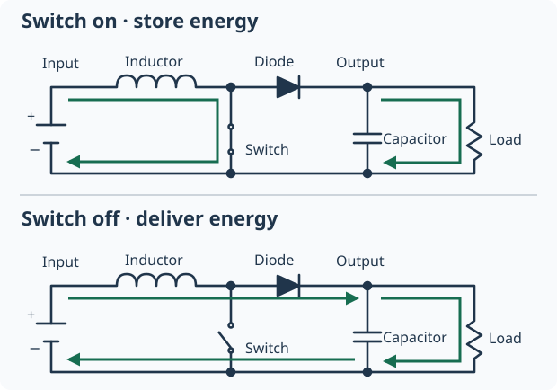

Zener diodes, voltage clamps and voltage boost
A 5.1 V Zener can hold a circuit near 5.1 V when the source supplies enough current. If that source falls to 4 V, the Zener can’t bring it back up. Follow the current to see why, then work out where the extra volts in a boost converter or mains stabiliser come from.
Find the cathode and read the 5.1 V rating



With its anode positive relative to its cathode, a Zener behaves much like an ordinary silicon diode. The 5.1 V rating refers to the other direction. Connect the cathode to the more positive point and the diode is reverse-biased. Its reverse current stays small well below the rating, then rises steeply as the junction approaches breakdown.
For the onsemi 1N4733A, the sheet specifies 4.845–5.355 V at a test current of 49 mA under its stated conditions. At a few milliamps, expect a different reading. The bend in the current curve, called the knee, is gradual. Breakdown is part of normal operation when current, power and temperature stay within the part’s limits. onsemi · 1N4733A datasheet table · Why the junction conducts in reverse.
Watch on YouTube · Zener diode voltage regulator · Khan Academy India – English
The video uses a 2 V example. Follow the reverse-bias graph, then watch where the current goes as the input moves above and below 2 V.
Follow the current through the resistor and the two branches


- Start at 9 V. If the diode is clamping near 5.1 V, the 220 Ω resistor drops about 3.9 V. Ohm’s law gives 3.9 V ÷ 220 Ω ≈ 17.7 mA into the junction where the wires meet.
- Split that current. The 1 kΩ load draws about 5.1 mA. The Zener carries the remaining 12.6 mA to return. If the load is removed, nearly all 17.7 mA flows through the Zener, which gets hotter.
- Lower the input to 4 V. The Zener barely conducts at this voltage. The 220 Ω resistor and 1 kΩ load now form a voltage divider, giving about 3.28 V across the load. With the load disconnected, the output would be about 4 V.
Even when the source is above 5.1 V, a heavier load can use up the available current. The output starts falling once there is too little diode current to hold the target voltage. That loss of regulation is called dropout.
Try lowering the input voltage
This model assumes sharp breakdown at 5.1 V. A real diode changes more gradually and can start losing accuracy before the predicted dropout. Try 4.0 V with the 1 kΩ load, then return to 9.0 V and select 220 Ω. In both cases, the output falls below the clamp voltage.
How a DC boost converter gets a higher voltage
Voltage is energy per unit charge. Current is charge per second. Multiply the two to get power, which is energy per second. A converter can give each coulomb more energy at its output by drawing more coulombs per second from its input.


- Switch on. The battery drives a rising current through an inductor and the switch. The inductor stores energy in its magnetic field. The output capacitor keeps feeding the load.
- Switch off. The inductor reverses the voltage across its own terminals to keep the current flowing. Its voltage adds to the source voltage along the path through the rectifying diode, charging the output capacitor above the input.
- Repeat. Feedback changes the switch timing to hold the output near the target within the converter’s input, current and thermal limits. Texas Instruments · Boost converter power stage.
At 90% efficiency, 6 W ÷ 0.90 ≈ 6.67 W in
From a 5 V source, 6.67 W ÷ 5 V ≈ 1.33 A in
The source supplies the 6 W delivered to the load plus roughly 0.67 W of losses. A 5 V source limited to 1 A only supplies 5 W. At 90% efficiency this caps the 12 V output at about 0.375 A in steady operation, even if an unloaded voltmeter shows 12 V.
What raises voltage when the grid is low?
An AC step-up transformer transfers energy through a changing magnetic field. An output winding with more turns than the input winding produces a higher voltage. For a simple first calculation, treat the transformer as ideal and use a resistive load.
From 190 V, 460 W ÷ 190 V ≈ 2.42 A in, before losses
A relay-tap automatic voltage regulator (AVR) selects a winding tap to boost a low input or trim a high input. Each unit has an operating range and a load rating. If the incoming circuit is weak, the extra current can make the voltage sag further. A unit may cut off outside its input range. A UPS can switch to its battery, which then supplies the energy. APC · AVR Boost, AVR Trim and On Battery.
For workshop equipment, read the input range and current on the nameplate. Motor starting current, power factor and welder input peaks can matter when sizing a supply. If the workshop actually has persistent low voltage or flickering lights, report the supply issue to your distribution utility and have a qualified electrician assess the installation. Use the battery circuit in P06 for this exercise. Mains in India · Mains in Australia.
Check your understanding
Why does a meter show 4.5 V in the 9 V shunt circuit when the load is 220 Ω?
The load and the series resistor are both 220 Ω, so they split the 9 V equally. At 4.5 V the 5.1 V Zener carries little current. To verify this on the bench, go to the P06 shunt-regulator exercise.
If a stabiliser raises 190 V to 230 V under load, where does the energy come from?
While operating from the grid, it comes from the 190 V input. The stabiliser draws more input current than the output current in the ideal resistive example. A UPS on battery draws from stored chemical energy.